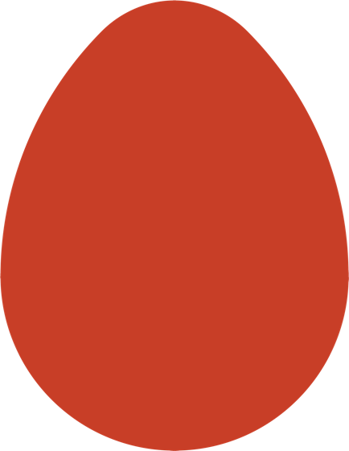

Website concepts
Three directions for the new one-page website, all built on the Perspectivity Design System. Same content, three ways of telling it. Draft for the acquisition circle, November 2026.

A · Calm
The business register: lots of white space, black and red type, dashed red rules. Reads like a well-made report.

B · Egg window
The medium register: photos inside the egg, egg-fragment patterns, light support colours with one bright element per section.

C · Navigator
The exuberant register: the visitor starts from their own question, guided by the Complexity Navigator, in contrasting colour fields.